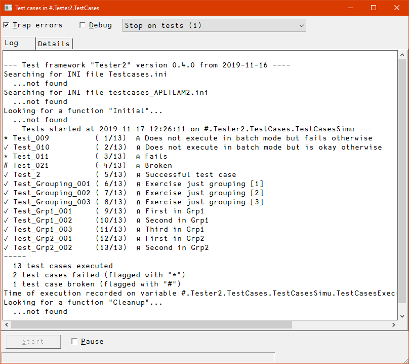
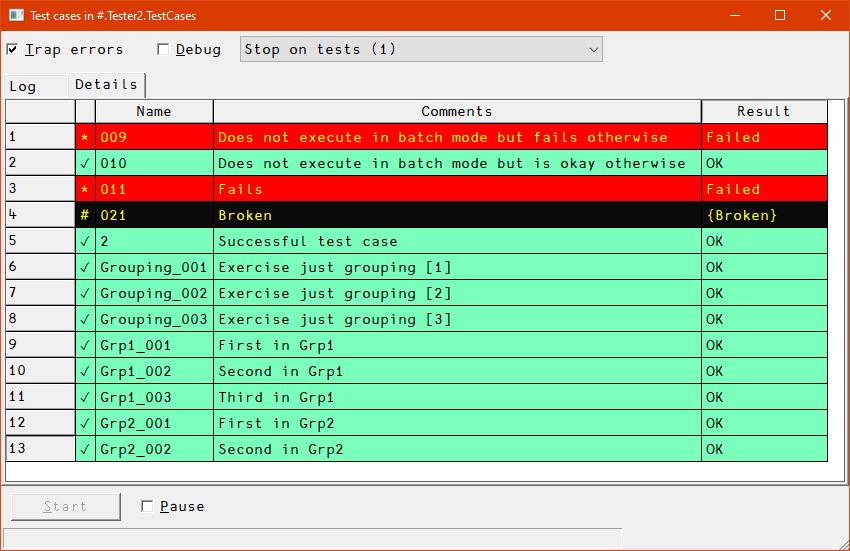
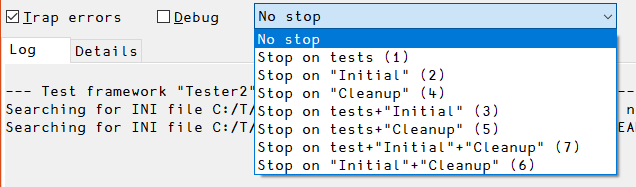

The framework comprises the class Tester2 which comes with functions designed to manage and execute test cases.
Tester2 cooperates with the class CodeCoverage which is designed to produce a code coverage report, which is recommended.
Both Tester2 and CodeCoverage can be loaded as Tatin packages.
Tester2 was originally implemented as a framework for testing all the projects of the APLTree library, but became quickly a general solution.
You are likely to find the framework flexible enough to suit your own needs when it comes to implementing tests.
Depending on how the Test framework is used it might or might not present a GUI. Note that the GUI is a Windows-only feature although in all other respects, Tester2 works on all platforms; if you decide to avoid the GUI, messages are printed to the Dyalog session window.
The GUI was mainly introduced for Tester2's own sake: Tester2 is used to test itself, and the messages printed to the session can be very confusing then, while the GUI gives you proper feedback even in that scenario.
Note that executing a large test suite with the GUI is significantly slower than doing the same without the GUI.
If the GUI shows, then this is how it looks like:

The “Log” tab shows all the messages the Tester2 class provides:
Initial was found and executed, and what it returned, if anythingCleanup was found and executedThe “Details” tab shows a list of all test cases with…
Test_) in the second columnFailed, OK or WindowsOnly etc., in the fourth column.
The status column shows:
✓ okay* failed# broken⍝ inactiveDifferent statuses show in different colours.
After all test cases got processed, the user might interact with the GUI. These are the commands presented by the context menu:
Note that all Run* functions return a two-element vector:
rc) with 0 for “okay”.rc is 0 and might contain additional information in case rc is not 0.A reference pointing to the GUI is assigned internally. That's why the GUI does not disappear straight away after all test cases have been executed. To get rid of it either click the “Close” box or call the T.CloseGUI method which does not require an argument.
Note that test cases causing a crash are considered “broken”. Test cases that do not return the expected result are considered “failing”.
#.Tester2 class assumes that all your tests are hosted in a namespace. It may be an ordinary (recommended) or a scripted namespace, but it must not be an unnamed namespace.Tester2 class to do anything useful.
The constructor demands a right argument: that must be a reference to the namespace that hosts all your test cases.
Example: given that all your test cases live in Foo, then you could create an instance T with: T←⎕NEW Tester2 Foo
Test_ followed either by some digits or a group name followed by an underscore followed by some digits, for example, Test_Foo_003.
It is recommended that in case you use groups you assign all your test cases to groups.
Test_foo_1 is fine, and so is Test_foo_0000001. However, they should be consistent, at least within a group.;) must carry a comment telling what is tested.
Keep in mind that later this is the only way to tell one test case from the others without reading the code, so be as clear as you can be, but also be as brief as possible.
You are restricted to a single line, and you should keep it short enough to be displayed with a reasonable setting of ⎕PW.
stopFlag and batchFlagstopFlag and batchFlagstopFlagA Boolean that tells a test function whether it should stop in case a test fails, or just carry on and report the test as a failure.
The first option allows you to investigate a failing test on the spot.
batchFlagA Boolean that indicates whether the tests are executed as a batch job, meaning that no human can be asked any question or make any decisions, and reporting makes no sense.
A test function can use that to not execute its test in case it needs to interact with a human, or is called as part of a fully automated process.
When this flag is true and a test fails, the line number of the test that failed is reported at the end of the message.
There are some typical scenarios:
Run.RunThese.RunBatchTests.RunGUI.All these functions call the function Run__ under the hood, which means that this is a generalized all-singing all-dancing function. If none of the above functions fulfils your needs, consider calling Run__ yourself.
Traps all errors except that it does not influence the workings of the debugFlag.
If debugFlag flag is 0, any failing test within any test function just makes the test function quit, returning a return code that has the symbolic name _Failure. See Symbolic names for details.
If debugFlag is 1 (= _OK), then any failing check crashes right on the spot. This allows one to investigate what went wrong, and why.
This makes the test framework stop just before the next test function is about to be executed. This allows you to trace test cases from top to bottom.
These are tests that do not need a human in front of the monitor. Ideally, all tests should be “batchable” of course. However, in real life, this is not always possible for technical reasons, or the effort would be too high.
Note that all test cases get the batchFlag provided as part of the right argument, so they know what's required, and can act accordingly.
debugFlag; 1 means that the test function runs in debug mode.
Assuming that all tests use the flow control functions provided by Tester2, the difference is that with debugFlag being 0 the test function would quit and return the symbolic name Failure, while with debugFlag being 1 the test function would crash on the spot, allowing the user to investigate.
batchFlag: 1 means that there is no user available in front of the monitor.
That allows a test function that requires a human for, say, some confirmation or some action to not carry out the test but return the symbolic name _NoBatchTest.
Tester2 comes with. This is much more readable than a simple integer, and it is easier to find as well. Also, you can add custom names. See Symbolic names for details.Note that you will find that test cases need to be kept simple, and should not depend on each other (see Best Practices). That leads easily to a significant number of test cases in case you throw complex scenarios at them, like, say, MarkAPL.
It is pretty easy to get lost in a large number of test cases, less so when writing the first set but more so when later you need to delete obsolete test cases, add new test cases for new features or fixed bugs, or make changes to test cases that need, well, changing.
That's why groups are quite important: they allow you to order test cases in a meaningful way.
It is also possible to execute all test cases belonging to a particular group (or some groups) with a single command.
You may also specify more than one group by…
* as a wildcard character for matching one or more groups
The wildcard character can only be used at the end of a name.
~ character (“without”), , ~ and * (since version 3.7)Note that you can have group-specific initialisation and cleaning up.
Group selection requires to call RunThese:
RunThese 'Grp1_01' ⍝ Specific test case
RunThese 'Grp1' ⍝ Specific group
RunThese 'Grp*' ⍝ All groups starting with "Grp"
RunThese 'Grp1,Grp2' ⍝ Two specific groups
RunThese 'Grp*,Misc_1' ⍝ All groups starting with "Grp" & one specific test case
RunThese 'G*,~GP' ⍝ Everything that starts with "G" except "GP"Although there are quite a number of symbolic names available to give feedback for many foreseeable problems (see Symbolic names for details), there will always be circumstances that cannot be foreseen. Therefore Tester2 allows you to define up to 9 custom symbolic names.
They are named from custom_1 to custom_9. They are initialised with ''. In order to use one you must assign a simple character vector. This character vector is shown in the “Result” column of the GUI etc.
An example would be (assuming that T is an instance of the Tester2 class):
T.custom_1←'Invalid version of Dyalog APL'Imagine that a few of a large set of test cases leave behind files in the temp folder, and you have no idea which one it is. That is easy to find out when you check right after a test case was executed.
That's why exec_before_each_test and exec_after_each_test were added as properties with version 1.1 to Tester2: they allow you to check whatever you want either just before or right after a test case was executed.
Another application is when a test case causes a sys error (aplcore) but it is not that particular test case that is causing the real problem but an earlier one. In that case you can execute 2 ⎕NQ'.' 'wscheck' after each test case, forcing the interpreter to perform a workspace integrity check; that will bring you much closer to the real culprit.
I found many other applications for this over the years.
When specified they must be the fully qualified name of a monadic function that may or may not return a result.
The right argument will be a two-element vector:
exec_before_each_test) or was just executed (in case of exec_after_each_test).Regarding the result there are two options:
⎕TRAP local and set it accordingly in the function for this.Tester2 does not take any action. If it is a simple non-empty string this string will be printed to the session. Then Tester2 carries on.No matter which of the Run* functions you are going to call, the workflow is always the same. (There is a minor difference when Run__ is used; this will be discussed later)
First you need an instance. Let's assume that you have a project in #.Foo and that the project's test cases are hosted by the namespace #.Foo.TestCases. You create an instance with:
T←⎕NEW #.Tester2 #.Foo.TestCasesFrom then on, all Run* functions, all symbolic names and all other helpers are available via the instance T. Some examples:
T.RunGUI ⍬
T._OK
T.PassesIf
T.⎕nl -3 ⍝ Produces a list of all public instance methodsNo matter which of the Run* functions you will call, they all carry out the same steps:
Note that there is an instance property IniFolder. By default this points to CiderConfig.HOME if a namespace CiderConfig can be found in the namespace that hosts the test cases or its parent.
If there is no such namespace the default falls back to the current directory.
If your INI file(s) do not live in either place then you must set the IniFolder property in order to allow Tester2 to find the INI file(s).
First the Run* methods check whether there is a file testcases.ini. If this is the case the INI file is processed. Use this INI file to specify general stuff that does not depend on a certain computer/environment.
Then the Run* methods checks for a file testcases-{computername}.ini. If this file exists it is processed. Use this to specify stuff that does depend on a certain computer or environment.
Note that if one or both of the two INI files exist there will be a flat namespace T.INI, meaning that any sections defined in the INI file(s) will be ignored.
An example: if your test functions are hosted by a namespace Foo.TestCases and your INI file specifies a variable hello as holding “world” and you have created an instance with the name T inside #.Foo.TestCases then:
'world'≡#.Foo.TestCases.T.INI.hello
1In the next step, the Run* method checks whether there is a function Initial in the hosting namespace. If that is the case, this function is executed.
Note that the function must be either niladic or monadic, and it may return no result at all or a Boolean result or a text vector.
Of course, you can simply execute → on a single line in your Initial function if any requirement is not met, but that would also mean that if you run your test cases as part of, say, an automated build process, then this would disrupt the workflow. (There are other reasons why this is not a great idea)
In such cases Initial should return a 0 indicating failure. Also, part of the initialisation might have been carried out, and a function Cleanup (discussed in a second) might get rid of any leftovers.
If the function is monadic, then a reference pointing to the parameter space is passed as the right argument. By checking this parameter space Initial can, for example, find out whether the batchFlag is set or not.
You may also put a variable inside that namespace which can later be referenced by the Cleanup function. However, in order to avoid name clashes you are advised to start the names of such variables with a ⍙ or a ∆ character.
Use Initial to create stuff that's needed by all test cases, or tell the user something important (only if the batch flag is false of course).
Notes:
Initial functions for specific groups. Use this to initialise stuff that is only needed for a certain group, like a database connection etc.Tester2 will look for a function Cleanup in the hosting namespace. If there is such a function it will be executed.
Of course you can also have group-specific Cleanup functions.
You can have initialisation functions for groups. It's recognized by naming convention: for a group foo the function's name must be Initial_foo.
The rules are the same as for the global Initial function, although the consequences are different:
When Initial_foo returns a Boolean and that is a zero, then no test function belonging to the group foo will be executed, but Tester2 will carry on executing other test cases.
Accordingly, when Initial_foo returns a non-empty text vector, then no test function belonging to the group foo will be executed, but Tester2 will carry on executing other test cases. The result will be added to the log.
A group-specific initialisation function is executed right before the first test case of that group is executed.
Now the test cases are executed one by one, or, if groups are defined, one group after the other.
After the last test case was executed, the Run* function checks whether there is a function Cleanup in the namespace hosting your test cases. If that's the case, then this function is executed.
Any Cleanup function should either return a shy result (which will be ignored) or no result at all. It might accept a right argument, but this is optional: it might as well be niladic. If it does accept a right argument it will get the parameter namespace passed.
Note that a function Cleanup would be executed no matter whether there was or was not a function Initial, and if there was, no matter whether it returned a 0 or a 1 or nothing at all.
You can have clean-up functions for groups. It's recognized by naming convention: for a group foo the function's name must be Cleanup_foo.
The rules are the same as for the global Cleanup function.
Naturally a group-specific Cleanup function is called after the last test function of that group got executed.
Finally, the namespace INI holding variables populated from your INI file(s) is removed from the instance.
There might be situations when you've executed some but not all test cases, and now you want to exit the test framework, typically while you are in a test function. Now the obvious choice is )Reset, or execute just →.
However, there are situations when you need things to be cleaned up, like closing files, deleting folder(s), shutting down a server, stuff like that.
In such a case the framework should clean up (execute any Cleanup function) etc.
This can be achieved by calling the instance method QuitTests. This function signals a QuitEvent which is trapped and processed in a specific way by the test framework.
Tester2 allows you to stop at strategically important points in time.
You might want to trace through a test function from top to bottom without tracing through the test framework. That can be achieved by passing a 1 as left argument to any of the Run* functions. The test framework will stop just before the test function(s) get executed.
You can force Tester2 to stop just before any Initial function gets executed. That can be achieved by passing a 2 as left argument to any of the Run* functions.
You can force Tester2 to stop just before any Cleanup function gets executed. That can be achieved by passing a 4 as left argument to any of the Run* functions.
You may mix things up. For example, to make Tester2 stop on every Initial, every test and every Cleanup function just specify the total as left argument: 1+2+4 = 7
Any other combination (3, 5, 6) is valid as well.
Note that the GUI provides a combo box with all possible values:

Usually one would like to know how much of the code is covered by test cases. Ideally that should be 100%, but that is rarely achievable.
However, in order to improve on this, one needs to know how much code is covered, and also which parts of the code are not covered.
Since version 2.3 Tester2 can cooperate with the class CodeCoverage which is capable of collecting the necessary data and compiling a report.
If you want Tester2 to cooperate with CodeCoverage, assign a reference pointing to an instance of CodeCoverage to the Tester2 property codeCoverage.
The methods fall into four groups:
Run, RunBatchTests, RunGUI, RunThese and Run__ are running all or selected test cases with or without error trapping.
Note that there are helpers available for the most common cases, see the “Helpers” for details.
FailsIf, PassesIf and GoToTidyUp control the program flow in test functions. The test template (see GetTestTemplate for details) contains examples of how to use these functions.
These functions return a result (Boolean) in case debugFlag is a 0 but make the calling Test_* function crash otherwise, allowing you to investigate a failing test case right on the spot. Note that the setting of the trapFlag has no bearing on this.
This is achieved by the functions FailsIf, PassesIf and GoToTidyUp signalling an error 999 that can be trapped with, say:
⎕TRAP←(999 'C' '∘∘∘ ⍝ Deliberate error')(0 'N')That's why the template for a test function carries such a statement and keeps ⎕TRAP local.
Note that GoToTidyUp allows you to jump to a label ∆TidyUp with a statement like this:
→GoToTidyUp ~expected≡resultThis is useful in case a test case needs to do some cleaning up like deleting a temporary file created by the test case, so just jumping out is not an option. In case the right argument is 1 (rather than 0) it causes a crash in debug mode and carries out the jump otherwise.
You can get a test function template by calling the instance method GetTestTemplate.
You must provide a number as right argument. The test function will be named Test_{yourNumber}. The number must be between 1 and 999 and will be formatted to a three-character vector.
You can also provide a group name via the optional left argument.
Check the examples which assume that an instance of Tester2 is available as T, and that you are inside the (ordinary, non-scripted) namespace that hosts the test cases:
≢'T'⎕NL 3
0
T.GetTestTemplate 3
Test_003
≢'T'⎕NL 3
1
'Misc' T.GetTestTemplate 1
Test_Misc_001
≢'T'⎕NL 3
2Notes:
GetTestTemplate when the namespace hosting the test cases is scripted. If that is the case you will be prompted for copying the code to the clipboard; it is then up to you to insert the code into the script.These are the public read-only instance fields that act like constants:
| Name | Meaning |
|---|---|
_OK |
Passed |
_Failed |
Unexpected result |
_NoBatchTest |
Not executed because batchFlag was 1. |
_NotApplicable |
This test is not applicable here and now |
_NotImplemented |
Attempts to test a feature that has yet not been implemented |
_InActive |
Not executed: the test case is inactive (not ready, buggy, …) |
_IncompatibleVersion |
Regarding the version of Dyalog currently running |
_LinuxOnly |
Not executed because runs under Linux only |
_LinuxOrMacOnly |
Not executed because runs under Linux/Mac OS only |
_LinuxOrWindowsOnly |
Not executed because runs under Linux/Windows only |
_MacOrWindowsOnly |
Not executed because runs under Mac OS/Windows only |
_MacOnly |
Not executed because runs under Mac OS only |
_NoAcreTests |
Not executed because it's acre-related but acre is not around |
_NoCiderTest |
Not executed because it's Cider-related but Cider is not around |
_SkippedByUser |
Returned in case the user refused to execute a test case |
_WindowsOnly |
Not executed because runs under Windows only |
Use one of these to assign an explicit result within any test function. The advantages of this approach:
_InActive, while searching for its number is pointlessNotes:
ListSymbolicNames availableFor example, assuming that Tester2 was instantiated with T←⎕NEW Tester2, then this:
R←T._Inactive ⍝ Waiting for fix for bug 1291
would pop up as “Inactive: Waiting for fix for bug 1291” in the “Result” column for the associated test function.
These are functions that are not required in order to run test cases, but can make a programmer's life significantly easier.
Two scenarios are very common:
Such tests may well interact with the user.
Most importantly this returns a Boolean that either indicates 100% success with a 1, or that at least one test cases failed, indicated by a 0.
Tester2 can establish helpers in the namespace that host your test cases covering these two scenarios.
Assuming that you are currently in that namespace, and that it contains Tester2 (and also CodeCoverage if you are after a code coverage report) then this is all that is required:
Tester2.EstablishHelpers ⎕THIS
"Prepare", "RunTests" & "RunBatchTests" successfully established in ...Note that you should read and amend the helpers after having established them, in particular Prepare.
First make sure that the helpers are established in the namespace that hosts your tests. If you are inside that namespace and have instantiated Tester2 as T:
T.EstablishHelpers ⎕THIS
"Prepare", "RunTests" & "RunBatchTests" successfully established in ...A niladic function that does not return a result. It asks whether the user wants to get a code coverage report.
If there is already such a report the user might want to append data, for example when you need to run your test suite under Windows, Linux and Mac-OS.
Such tests might well rely on the user to answer questions. The debug flag is set, so when a test case has a problem, it stops on the spot and allows the user to investigate the problem.
(success log)←RunTestsInBatchModeThis does not do code coverage. The debug flag is off, so in case a test case fails it does not stop.
This is typically run as part of an automated process.
It returns a two-item vector as result:
Prepare is called by RunTests, but it can also be useful if you want to prepare for a run but have special needs that are not covered by RunTests, for example when you want to run only a specific group of test cases.
You only need to read this if the top-level helpers do not cover your needs.
This is about Tester2's Run* functions. These should be flexible enough to cover even exotic needs.
{(rc log)}←{stopFlag} Run debugFlagRun requires a Boolean right argument. A 1 makes the test framework stop on a line that fails to return the expected result (PassesIf, FailsIf, GotoTidyUp) while a 0 does not.
The optional left argument must also be Boolean and defines whether the test framework should stop right before any of the test cases is executed (1) or not (0, which is the default).
With RunGUI you can achieve the same as with Run but it is a Windows-only feature. It might be easier to start with RunGUI but you might switch to Run later, if only because it is significantly faster.
However, there are situations when RunGUI is indispensable: Tester2's own test cases are almost impossible to follow without it, for example. It's also useful to demonstrate the features of the Tester2 class.
RunGUI requires only a right argument; if this is empty all test cases will be executed. You can specify numbers or a group name or mix a group name with one or more numbers. You can also precede a group name with a ~ (without) to execute all test cases but the members of that group.
Notes:
CloseGUI.CreateParms, make amendments and pass the parameter space as the optional left argument to RunGUI. However, since you can make those amendments in the GUI itself this is useful only to specify defaults for the GUI.This method is particularly helpful while developing/enhancing stuff: the function allows you to run just selected test functions rather than a whole test suite.
If you now think, well, why not just call any function Test_001 myself then imagine a situation when all your test cases depend on an INI file or the execution of Initial or both. That is exactly the advantage of RunThese: it carries out all these steps for you, and also executes the Cleanup function in case there is one.
RunThese offers the following options:
T.RunThese 1 ⍝ Execute test cases 1 that do not belong to any group
T.RunThese 'Group1' ⍝ Execute all test cases belonging to Group1
T.RunThese '~Group1' ⍝ Execute all tests but those belonging to Group1 (without)
T.RunThese 'Group1' (2 3) ⍝ Execute test cases 2 & 3 of Group1
T.RunThese 'Group1' 2 3 ⍝ Same as before
T.RunThese 'Group1,Group2' ⍝ Execute two groups
T.RunThese 'Misc' ⍝ Execute all test cases of the group "Misc"
T.RunThese 'L*' ⍝ Execute all test cases of all groups starting with "L"
T.RunThese 'Group1_001' ⍝ Executes just this test case
T.RunThese 'Test_Group1_001' ⍝ Same as beforeSometimes you want to trace through test cases. This can be achieved by specifying a 1 as the (optional) left argument. RunThese would then stop just before any test case is executed, after processing any INI file(s) and executing any Initial function.
{(rc log)}←{stopFlag} RunBatchTests debugFlagThis is the same as Run except that it passes a 1 as batchFlag to the test functions. This allows the test function itself to quit under some circumstances. This is usually because a test requires a human in front of the monitor, and if such a human is not available right now then there is no point running such tests.
{(rc log)}←Run__ psThis is a generalized function that is effectively called by all the other Run* functions. In case the other functions don't suit your needs, you can use it yourself, although this requires a little more effort:
ps←T.CreateParms ⍬
ps._∆List ⍝ List the defaults
batchFlag 0
debugFlag 0
guiFlag 0
stopFlag 0
testCaseNos
trapFlag 1
⍝ Make amendments:
ps.stopFlag←1
ps.testCaseNos←'Misc' (1 2 3)
⍝ Call the Run__ function:
(rc log)←T.Run__ psThere are a couple of methods available that assist you in managing test cases.
The examples stem from the Fire project (https://github.com/aplteam/Fire).
We assume that you have instantiated Tester2 as T.
ListGroups lists all groups:
T.ListGroups
acre
Cider
InternalMethods
List
Misc
Replace
ReportGhosts
SearchListSymbolicNames lists all symbolic names.
ListTestFunctions requires a right argument (empty or group name) and accepts an optional left argument (test case numbers). The group name might carry a trailing * character as a wildcard.
≢T.ListTestFunctions'Foo'
0
≢T.ListTestFunctions'foo'
3
T.ListTestFunctions'foo'
Test_foo_01 Pro-forma test used to test `RunThese 'foo' 1`
Test_foo_02 Pro-forma test used to test `RunThese` with `1 2` as right argument
Test_foo_03 This is used to check whether T._Inactive is processed as intended AND ...
≢T.ListTestFunctions'Mi*'
33
1 7 99 ListTestFunctions 'Mi*'
Test_Misc_01 Pro-forma test used to test `RunThese` with a 1 as right argument
Test_Misc_07 Exercise the `RunThese` method
≢ T.ListTestFunctions''
87With a large number of test cases you might prefer to get them into an edit window rather than printing them to the session. This can be achieved by passing “view” as left argument:
'view' T.ListTestFunctions ''Notes:
If the result is too wide to fit into ⎕PW measures are taken
Occasionally you might want to edit some or even all test case functions. That can be easily achieved:
T.EditTestFunctions'' ⍝ Edit all test cases
T.EditTestFunctions T.ListTestFunctions'ZZZ' ⍝ Edit all of the group "ZZZ"
Renaming a test function is harder (and more dangerous) than you might think at first glance, hence the method RenameTestFnsTo is available to assist you.
The syntax:
'oldname' T.RenameTestFnsTo 'newname'Let's assume that at first you started numbering your test functions. Soon you come to realize that groups would be helpful. But it is awkward to have some test functions carrying just numbers and others group names and numbers. Therefore, it is a good idea to rename those with just a number into, say, Test_Misc_ followed by the number.
For example:
'Test_001' T.RenameTestFnsTo 'Test_Misc_001'RenameTestFnsTo does a couple of things for you:
Test_001 to Test_Misc_001Test_Misc_001Test_Misc_001Test_001Test_001Note that RenameTestFnsTo can deal with groups as well. For example:
'Foo' T.RenameTestFnsTo 'Misc'Assuming that there is a group “Foo”, then all members of that group would be renamed so that they become members of the group “Misc”.
If there is already a group “Misc” then numbering would start with the highest previous number plus 1.
Test_001, Test_010 etc. The same holds for numbering within groups.The exception from this rule is when all test cases require the same pre-condition like, say, a database connection. In that case establish what's needed in a function Initial and use a function CleanUp to get rid of it.
If all test functions of a certain group share the same requirement use Initialisation for groups.
Having said this, in rare cases it is required to build up on other test cases for technical reasons, or in order to avoid a significant performance penalty.